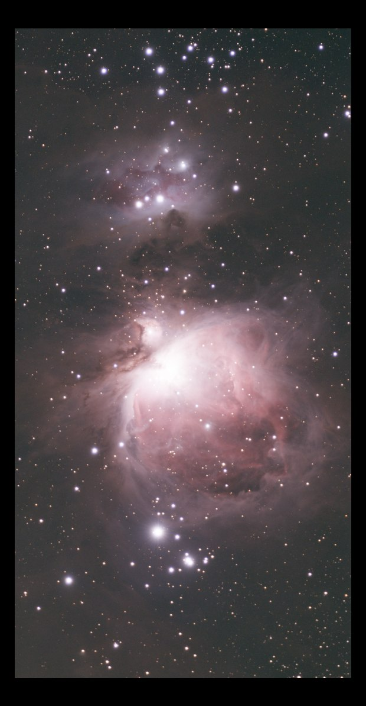

Image linéaire
Outil Crop
Retire les bords irréguliers de la pile ; permet aussi de tourner ou de retourner l'image.
Comment s'en servir
- Ouvrir Tools et cliquer l'outil : il s'ajoute après l'étape choisie.
- Bouger ses réglages : l'image suit pendant le geste (Live preview).
- Apply garde le résultat. Before / after compare à tout moment.
Faire glisser le cadre ou ses coins sur l'image.
Réglages
- Aspect ratio
- Free, Original, 1:1, 4:3, 3:2, 16:9 et leurs formes en portrait.
- Trim edges
- 2, 5, 10 ou 15 % : retire cette part de chaque côté.
- Orientation
- Quarts de tour, demi-tour, retournement horizontal et vertical.
- Whole frame
- Remet le cadre sur toute l'image.
Quand s'en servir
En premier : les bords irréguliers laissés par l'empilement faussent tous les outils qui suivent.
Image
Travaille sur une image linéaire ou étirée.
Exemple

pile entièrerecadrée